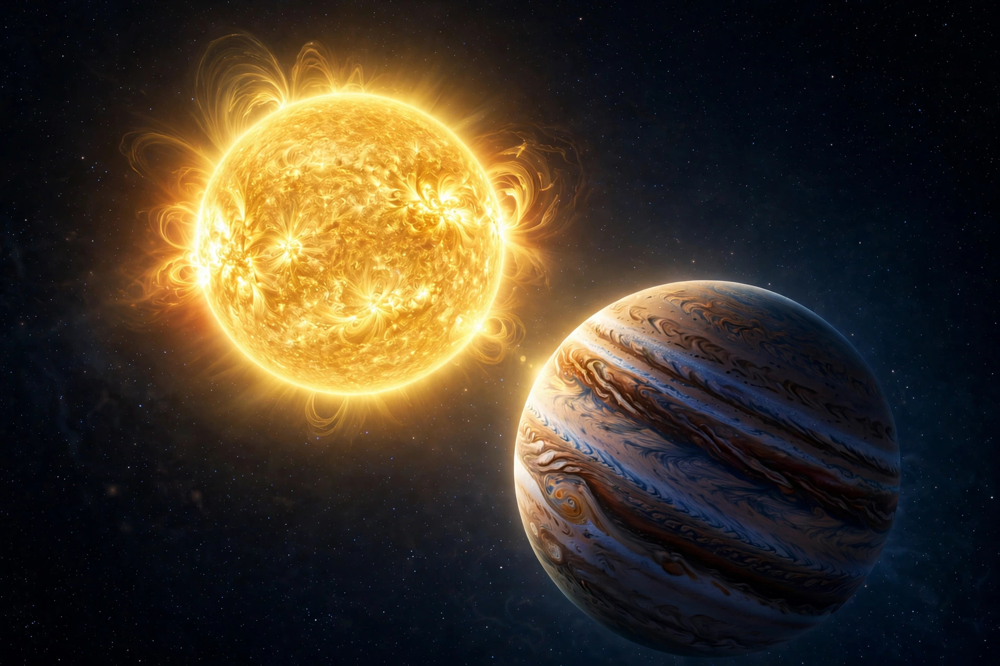

51 Pegasi
| 51 Pegasi (Helvetios) | |
 | |
| Constellation | Pegasus |
|---|---|
| Distance | ≈ 50.9 light-years |
| Spectral type | G2 IV (Sun-like) |
| Mass | ≈ 1.11 M☉ |
| Age | ≈ 6.1 billion years |
| Planets | 1 confirmed (51 Pegasi b, "Dimidium") |
51 Pegasi (abbreviated 51 Peg), formally named Helvetios, is a Sun-like star located about 50.9 light-years (15.6 parsecs) from Earth in the constellation of Pegasus. It was the first main-sequence star found to have an exoplanet orbiting it, a discovery announced in 1995 by Michel Mayor and Didier Queloz that transformed astronomy and earned them the 2019 Nobel Prize in Physics.
The star
51 Pegasi is a G-type star slightly older, more massive and more metal-rich than the Sun, with an estimated age of about 6.1 billion years. It is visible to the naked eye under dark skies, with an apparent magnitude of about 5.5. In 2015, through the IAU's NameExoWorlds campaign, the star was given the proper name Helvetios, Latin for "the Helvetian", referring to the Celtic tribe that lived in Switzerland, the discoverers' home country.
51 Pegasi b
The planet, designated 51 Pegasi b and informally named "Bellerophon" and later officially "Dimidium", was detected by the radial-velocity method using the ELODIE spectrograph at the Observatoire de Haute-Provence. It completes an orbit in just 4.23 days at a distance of only about 0.05 AU — far closer to its star than Mercury is to the Sun. With a minimum mass roughly half that of Jupiter, it became the prototype of the "hot Jupiter" class: a gas giant orbiting extremely close to its host star. Its existence contradicted then-current theories of planet formation, which held that gas giants could form only beyond the frost line, and prompted the development of planetary migration theory. In 2015 astronomers reported the first direct detection of visible light reflected from the planet's atmosphere.
See also: Exoplanet · Hot Jupiter · Didier Queloz · Michel Mayor